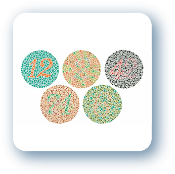

Daltonismo: Redução da capacidade de diferenciar certas cores. Geralmente, o problema é hereditário. Outras causas incluem certas doenças oculares e medicamentos. Mais homens do que mulheres são afetados.
Estima-se que 8% da população masculina seja portadora, embora apenas 1 % das mulheres sejam atingidas.
Teste de Ishihara
O teste de cores de Ishihara é um teste para detecção do daltonismo. Recebeu esse nome devido ao Dr. Shinobu Ishihara (1879-1963), um professor da Universidade de Tóquio, que foi o criador desses testes em 1917. O exame consiste na exibição de uma série de cartões coloridos, cada um contendo vários círculos feitos de cores ligeiramente diferentes das cores daqueles situados nas proximidades. Seguindo o mesmo padrão, alguns círculos estão agrupados no meio do cartão de forma a exibir um número que somente será visível pelas pessoas que possuirem visão normal. Ao todo são exibidas 32 placas para identificação dos algarismos ocultos entre os círculos. O número de acertos pode variar conforme o grau e o tipo de daltonismo. 